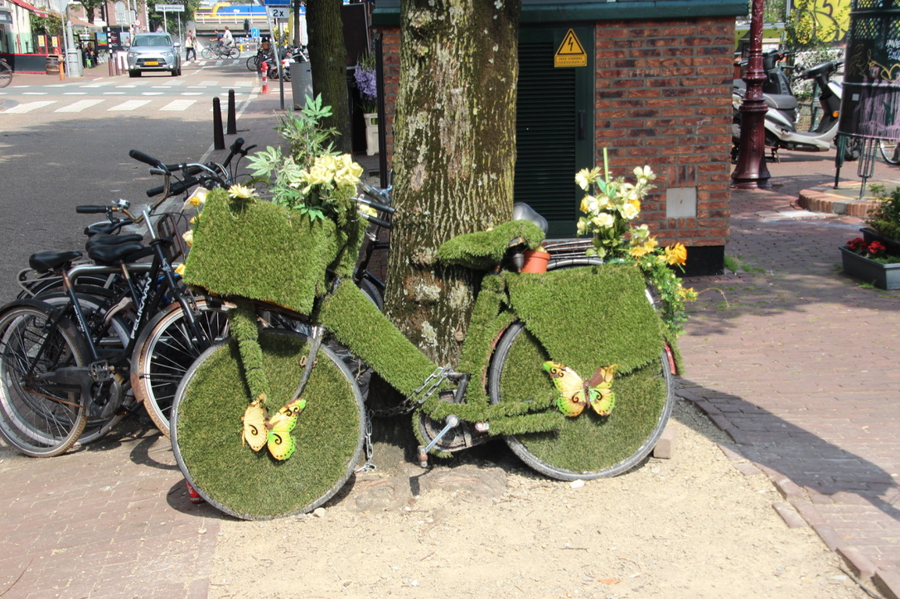

Art tour Amsterdam
date: 27/01/2022

By participating in this activity, we will take you along the most beautiful sights of Amsterdam. Get to know the history and culture on this 2.5-hour walking tour. Walk past the romantic canals and walk across Spui to get to the pearl of Amsterdam. With it’s entrance tucked away in a narrow side street, this very special courtyard is just waiting to be explored. On the way back to Dam Square you will see the river from which the city owes its name: the Amstel. The city tour ends at the National Monument, which was originally built to commemorate the victims of World War II, but is now a memorial to all those who lost their lives in war around the world.
About this activity
- Free Cancellation
- Duration 2.5 hours
- Tour guide who speaks English and Dutch
Highlights
You will visit the most beautiful works of art in the Center of Amsterdam. You will be brought up to date with contemporary art and the art of the past. Find out the best stories that the tour guide tells about life in Amsterdam, you can always ask questions and you will learn more and more about this town.
 Go Back